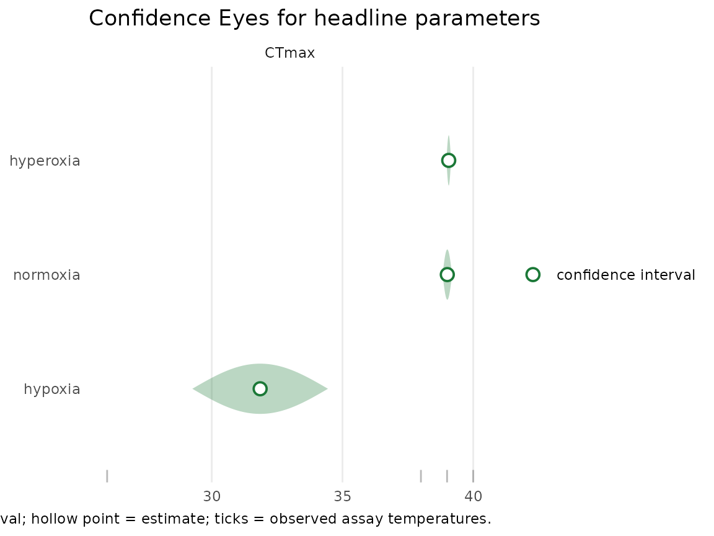
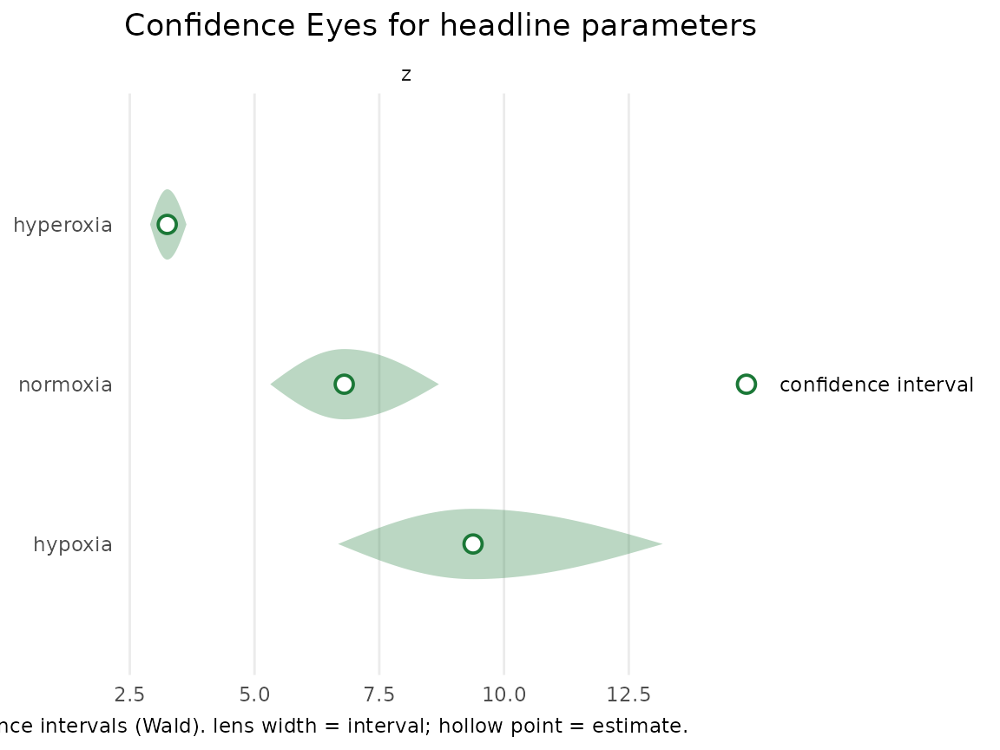
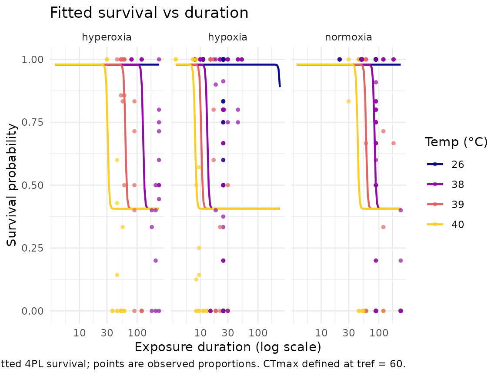

Case study: zebrafish thermal tolerance under hypoxia, normoxia, and hyperoxia
Source:vignettes/case-study-zebrafish.Rmd
case-study-zebrafish.RmdThis article fits a lethal thermal-death-time (TDT) model to
zebrafish (Danio rerio) larvae assayed under three oxygen
treatments — hypoxia, normoxia, and hyperoxia — and
asks the oxygen- and capacity-limited thermal tolerance
(OCLTT) question: does oxygen availability set the upper thermal limit?
If it does, the critical temperature CTmax and the
thermal-sensitivity slope z should shift with the oxygen
treatment. It mirrors the zebrafish case study in bayesTLS,
fit here by maximum likelihood instead of MCMC.
The fit runs live (TMB, no Stan) and the treatment
effect is the direct CTmax/z parameterisation — one CTmax
and one z per oxygen level. Uncertainty is summarised by
confidence intervals; for this well-identified
three-group fit we use the fast Wald intervals, while the
profile-likelihood intervals that are the freqTLS default
are showcased on the single-fit studies (e.g.
vignette("case-study-shrimp")).
The dataset and the question
zebrafish_o2 is vendored from bayesTLS
(Saruhashi et al. 2026) under CC BY 4.0; cite the source and
citation("freqTLS") when you use it (see
?zebrafish_o2). It records survival counts in a temperature
× duration grid for diploid and triploid larvae across the three oxygen
treatments. We take the diploid larvae — the focal
group; triploids are a separate extension — and let CTmax
and z depend on the oxygen treatment.
data(zebrafish_o2)
zf <- subset(zebrafish_o2, ploidy == "diploid")
table(zf$oxygen)
#>
#> hypoxia normoxia hyperoxia
#> 321 314 66
std <- standardize_data(
zf,
temp = "temp", duration = "duration_min",
n_total = "n_total", n_surv = "n_surv",
duration_unit = "minutes"
)The design spans assay temperatures from 26 to 40 °C and exposures up
to 240 minutes, replicated across the three oxygen treatments — 701 rows
in total. oxygen is the covariate of interest.
The grouped fit (live)
A single fit_4pl() call fits all three oxygen treatments
at once, each with its own CTmax and z but a
shared constant 4PL shape (the temperature effect runs through the
midpoint). CTmax is reported at a one-hour reference
exposure (t_ref = 60 minutes).
fit <- suppressWarnings(fit_4pl(
std,
ctmax = ~ 0 + oxygen,
z = ~ 0 + oxygen,
t_ref = 60,
family = "beta_binomial"
))
fit
#> <freq_tls>
#> Data: 701 rows; 4 temperatures; 33 durations
#> T_bar: 34.22
#> Family: beta_binomial (relative threshold, t_ref = 60 minutes)
#> By: oxygen
#> Fit: converged (pdHess = TRUE); default CI method = profilePer-treatment CTmax and z with confidence
intervals:
ox <- tls(fit, by = "oxygen", method = "wald")
ox$summary
#> # A tibble: 6 × 5
#> oxygen quantity median lower upper
#> <chr> <chr> <dbl> <dbl> <dbl>
#> 1 hypoxia CTmax 31.9 29.3 34.4
#> 2 normoxia CTmax 39.0 38.8 39.2
#> 3 hyperoxia CTmax 39.1 39.0 39.2
#> 4 hypoxia z 9.38 6.67 13.2
#> 5 normoxia z 6.80 5.31 8.70
#> 6 hyperoxia z 3.25 2.91 3.64Read off the OCLTT signal in CTmax (the one-hour
critical temperature): the treatments order from lowest to highest as
hypoxia (31.9 °C) < normoxia (39.0 °C) < hyperoxia (39.1
°C). Under the OCLTT hypothesis, restricting oxygen should
lower the thermal limit, so hypoxia is expected at the cold end
and hyperoxia at the warm end; the fitted ordering and the overlap (or
separation) of the intervals are what the data say about that
prediction.
A Confidence Eye per treatment
The default freqTLS uncertainty visual is the
Confidence Eye — a confidence lens with a hollow point
estimate, carrying no prior and making no probability statement about
the parameter. One lens per oxygen treatment makes the
CTmax comparison legible; the parameter names are read off
the fit so they always match the fitted labels.
plot_confidence_eye(fit, parm = get_ctmax(fit)$parameter, method = "wald")
The same display for the thermal-sensitivity slope
z:
plot_confidence_eye(fit, parm = get_z(fit)$parameter, method = "wald")
Do the treatments differ? Reading the intervals
The OCLTT prediction is a statement about differences
between treatments. The honest frequentist reading is the overlap of the
per-treatment confidence intervals above: where two treatments’
CTmax intervals are disjoint, the data reject equality at
the 95% level; where they overlap, the data are consistent with no
difference. freqTLS also supports an explicit contrast (the
difference in CTmax or z between two
treatments, with its own confidence interval and a likelihood-ratio
test) — see vignette("frequentist-and-bayesian") and
?confint.profile_tls for the contrast interface. Because
the relative threshold is the curve midpoint, these comparisons are
prior-free and respect the asymmetry of the likelihood.
Seeing the fit
The fitted survival surface, one curve per oxygen treatment and assay temperature, with the observed proportions overlaid:
plot_survival_curves(fit)
Boundary: what this case study does not cover
We fit only the diploid larvae; the triploid larvae
are a separate ploidy contrast left as an extension. The fit holds the
4PL shape constant across treatments (the temperature
effect runs through the midpoint), matching the bayesTLS
configuration; relaxing that to a per-group shape (letting
low, up, k vary) is the
shape-covariate feature demonstrated in
vignette("comparing-to-bayesTLS"). As a lethal endpoint,
the survival-count 4PL applies directly; the sublethal
loss-of-equilibrium endpoint is out of scope for
freqTLS.